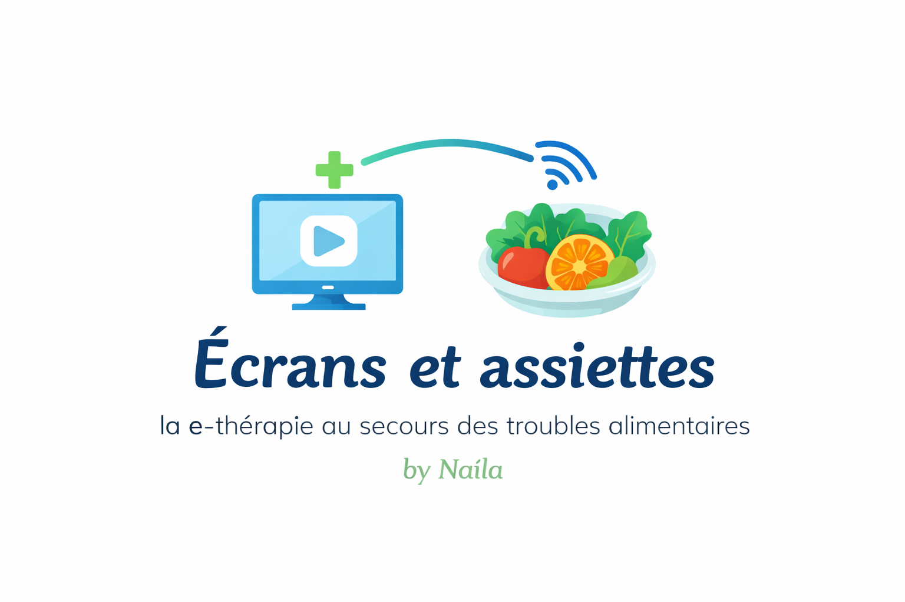

La e-thérapie au secours des troubles alimentaires
Ce site a pour objectif d’informer, de sensibiliser et d’accompagner autour des troubles du comportement alimentaire (TCA). Ces pathologies complexes, qui touchent plus de 9% de la population mondiale, combinent des dimensions psychologiques, émotionnelles, sociales et biologiques, et représentent l’un des troubles psychiatriques les plus graves.
Face à ces défis, la e-thérapie apparaît comme une réponse innovante. Elle ne se limite pas à une simple consultation vidéo : elle constitue un véritable écosystème thérapeutique intégrant des modules éducatifs interactifs, des exercices de thérapie cognitivo-comportementale (TCC), des outils de suivi quotidien et des échanges réguliers avec des professionnels de santé. Cette approche numérique permet de briser les barrières géographiques et sociales, tout en offrant un accès flexible, discret et personnalisé aux soins.
Le projet Écrans et assiettes s’inscrit dans une démarche pédagogique et scientifique : il vise à vulgariser les connaissances sur les TCA, à montrer l’apport concret des outils numériques dans leur prise en charge, et à proposer des ressources pratiques pour mieux comprendre, prévenir et accompagner ces troubles.
Projet réalisé dans le cadre d’un Master 1 Nutrition & Diététique, il reflète une volonté d’allier rigueur académique et accessibilité pédagogique, afin de contribuer à une meilleure sensibilisation et à une prise en charge plus inclusive des TCA.